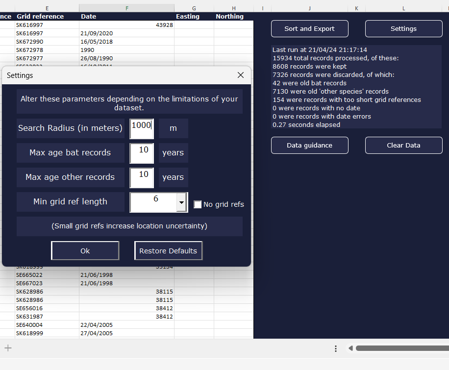

An specialist in Geographic Information Systems (GIS) with a background in Natural Sciences and Woodworking. Looking for a position in Germany to apply my developer skills and explore new technologies. Currently studying full-stack development and creating web-applications. Check out some of my projects below!
CRUD app with Raspberry Pi server
Setting up hosting.
Fact-Share app
Full-stack "social media style" app. Visitors can browse and vote on facts, or add their own. Learned how to create React components and change "state". Made use of Supabase API to Select, Insert and Update records.
UK House Price Web-Map
Interactive web-map allows users to visualise the actual change over time in average property price within UK administrative boundaries.
Web-GIS
Work In Progress. Exploring advanced GIS functionality in web-maps: Drag-and-drop data, layer visibility toggle, geometry creation and spatial analytics.
Expense Tracker
Simple expense tracker exploring the use of array methods and local storage in JavaScript.
Agent-based Modelling
Simulation of a predator/prey relationship on an "edible landscape". Explored Classes and Inheritence, learned Object-Oriented Programming.
Iceberg Scanner
Receives LIDAR data of an iceberg, calculates the mass of the iceberg and displays the data

Remote Sensing
Page under construction. This will link to my remote-sensing projects, both professional and from my MSc programme.
Habitat Mapping
Page under construction. I have professional experience working for an ecological consultancy as a habitat mapper and biodiversity calculation specialist.

Species Record Assistant
Private commission. Data transformation and analytics tool for cleaning and analysing ecological data with associated automation scripts.
PyQGIS API Scripting
Multiple automation scripts for performing spatial analysis in QGIS
Database Normalisation
Designed databases for ecological data. Created and managed Geopackages and PostgreSQL/PostGIS databases